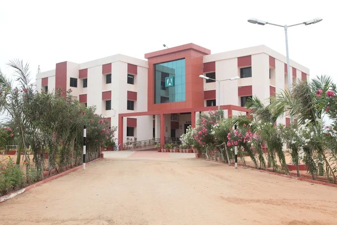
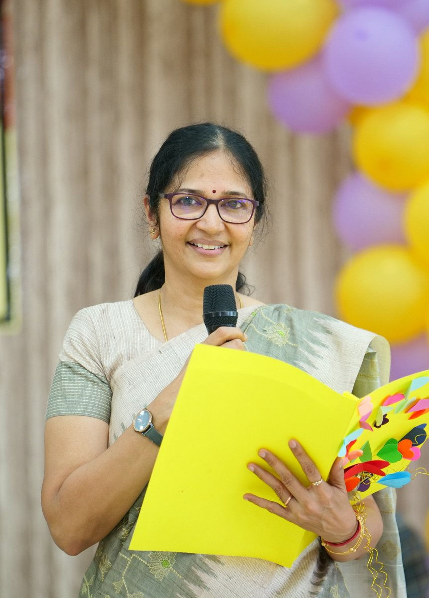
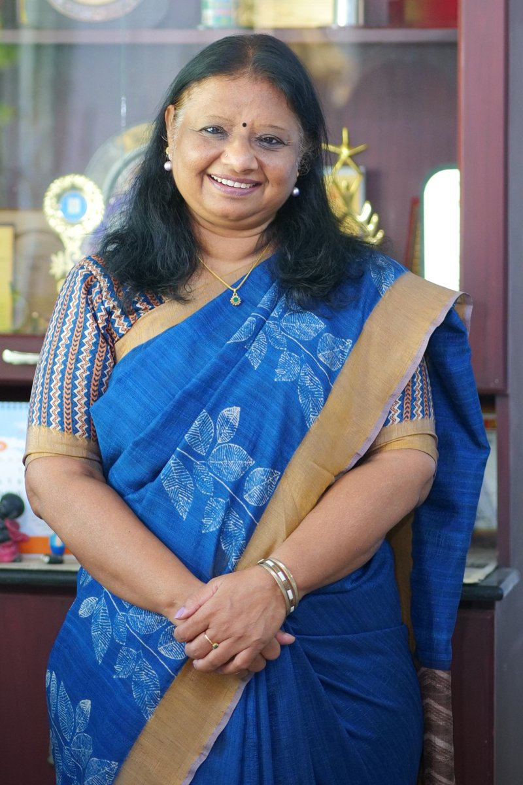

About Alagar Public School
A joyful, future-ready CBSE school in Thoothukudi — established in 2009 by the Alagar Charitable Foundation, where every child is treasured.

A legacy of values, a vision for learning
Alagar Public School was established in 2009 by the Alagar Charitable Foundation, an initiative of the Alagar Group of Companies in Tuticorin — an eight-decade-old business conglomerate led by Chairman Mr. A. Jayaraman.
The school draws inspiration from the ancient Indian tradition where teachers are venerated, and places the learner at the very centre of everything: “If you cannot learn the way you teach, can you teach the way I learn?”
Following the CBSE curriculum, we work towards academic excellence, positive social values and creative freedom — giving students rich exposure beyond books and academia. Our 6-acre campus features a unique architectural design, with open corridors that offer vistas of light and shade and spacious, naturally lit classrooms.
- check_circle Founded by the Alagar Charitable Foundation
- check_circle CBSE curriculum & values-based learning
- check_circle Learner-centred philosophy
- check_circle Light-filled, 6-acre green campus
What we believe, and what we strive for
Our guiding philosophy shapes every classroom, every day — where children are treasured and learning is joyful.
Our Vision
We provide fun-filled, creative and challenging education in an atmosphere which is conducive to learning.
Our Mission
The mission of Alagar Public School, where children are treasured, is to foster a love of learning in a congenial environment which empowers all students to be competent, productive, caring and responsible citizens.
Our Core Beliefs
- check_circle Students come first.
- check_circle All students can learn and succeed.
- check_circle Each child is a distinctive individual with specific talents and abilities, and deserves resources to match their needs.
- check_circle Students deserve equal access to educational programmes, resources and services.
- check_circle Family involvement and encouragement are critical to academic success.
- check_circle It is the responsibility of the school community to inspire lifelong learners and prepare them for their careers.
Educate children to plant for a hundred years
format_quote“If your plan is for one year, plant rice; if your plan is for ten years, plant trees; if your plan is for a hundred years, educate children.” — Confucius
Education is a holistic process that continues throughout our life. An educated person has the ability to change the world — education opens our mind and expands our horizon. In this era of competition, Alagar Public School strives to give every child a blend of values and skills required for advancement in an increasingly competitive world: sterling character, a balanced dispassion and confidence.
Our school values each and every child as a gift of opportunity. They are taught the values of hard work and broad-mindedness, and encouraged to cultivate the qualities needed to be successful in life. The investment we put into our children today will help them achieve greater heights and create the unimaginable.
We always believe in innovative techniques to make learning meaningful and lifelong. Our vision is to provide a caring, friendly environment where children recognise and achieve their fullest potential — guided by a Principal and dedicated team of teachers who lead with commitment, zeal and pride.
“Focus on the journey, not the destination — joy is found not in finishing an activity, but in doing it.”
Turning compulsive learning into joyful learning
format_quoteOur long-term dream is to make a difference in the lives of children by converting compulsive learning into joyful learning — a garden that lets every child blossom.
Warm greetings to dear parents and students. The dream of a school is not to be a learning factory, but a garden that brings out the true potential of every child. That passion made us venture into new territories, helping us draw out the inner abilities and creativity of each child — education that is the knowing of real truth, not merely the learning of information.
At Alagar Public School we emphasise both scholastic and non-scholastic activities that imbibe Indian culture, while ensuring the holistic development and academic excellence of the child. Our sincere, dedicated faculty work towards value-based education through critical thinking, creativity and a supportive learning community, and are equipped with pedagogic technologies that make learning more palpable and enjoyable.
It gives us immense pleasure to transfer the vision of APS into reality and bring light to thousands of lives through this noble act of imparting education. It is our earnest desire to constantly upgrade the quality of education at all levels with your continued support and God's blessings.
“Intelligence need not be influenced, it needs to be inflamed.” — Sadhguru


A warm welcome to our school family
format_quoteIt is my privilege to welcome you to Alagar Public School — a place where learning, growth and community come together to create an enriching educational experience.
At APS, we are committed to nurturing every student's potential through academic excellence, character development, and a wide array of opportunities beyond the classroom. Our dedicated team of educators works tirelessly to inspire curiosity, foster creativity, and instill a lifelong love of learning in each child.
We believe in the power of partnership. By working closely with parents and the broader community, we create a supportive environment where students feel valued, empowered, and ready to take on new challenges.
What you'll find at APS:
- check_circle A rigorous and engaging curriculum tailored to the needs of all learners.
- check_circle A focus on holistic development — academically, socially and emotionally.
- check_circle A commitment to inclusion and diversity, celebrating every individual.
- check_circle A wide range of activities, from sports and arts to STEM and service.
This website is designed to serve as a hub of information and a reflection of our vibrant school community. Whether you are a current member of our school family or exploring what we have to offer, I invite you to browse through our programs, events and achievements. If you have any questions or wish to learn more, please do not hesitate to reach out — we are always here to assist. Thank you for visiting. Together, let's make this journey of education an inspiring and transformative one for every student.
Transparency & school information
Key institutional details as per CBSE norms. Statutory documents are available at the school office on request.
Documents available
A year of growth, results & celebration
From a consistent board-results record to a vibrant calendar of activities and achievements, our annual highlights reflect a thriving school community. For the latest academic calendar, results summary and event highlights, explore our News & Events.
Admissions Open for 2026–27
Give your child the Alagar advantage. Book a campus visit, meet our teachers and see a happy classroom for yourself.